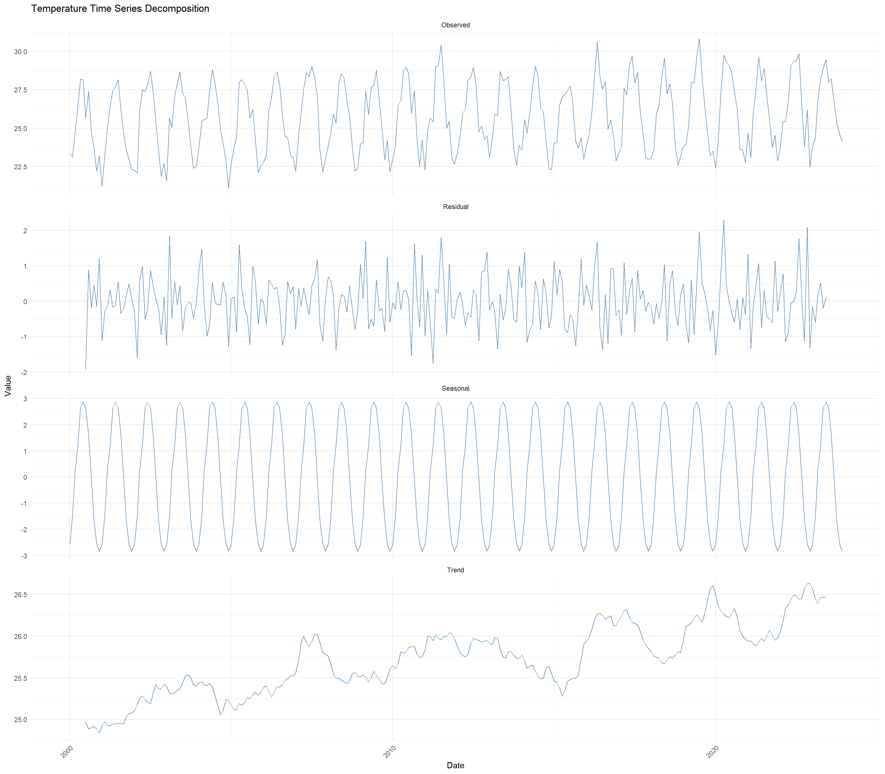

knitr::opts_chunk$set(echo = TRUE, warning = FALSE, message = FALSE)
# Load configuration and data
config <- readRDS("data/enhanced_config.rds")
india_dataset <- readRDS("data/processed/complete_india_dataset.rds")
performance_monitor <- readRDS("data/processed/performance_monitor.rds")
# Load required packages
library(terra)
library(ggplot2)
library(dplyr)
library(lubridate)
library(forecast)
library(tseries)
library(changepoint)
library(cowplot)
library(viridis)
library(ggridges)
library(tidyr)5 Enhanced Time Series Analysis with Change Point Detection
6 Enhanced Time Series Preparation and Analysis
This document implements advanced time series analysis including change point detection, trend analysis, and comprehensive temporal pattern identification for India’s climate data.
6.1 Setup
6.2 Create Synthetic Time Series from Spatial Data
# Create comprehensive time series from spatial climate data
create_india_timeseries <- function(spatial_data, start_year = 2000, end_year = 2023) {
cat("Creating synthetic time series from spatial data...\n")
# Create date sequence
dates <- seq(as.Date(paste0(start_year, "-01-01")),
as.Date(paste0(end_year, "-12-31")),
by = "month")
n_months <- length(dates)
n_years <- end_year - start_year + 1
# Function to extract spatial mean and add temporal variation
extract_timeseries <- function(spatial_raster, variable_name) {
if(is.null(spatial_raster)) return(NULL)
# Get spatial mean for each month/layer
if(nlyr(spatial_raster) == 12) {
# Monthly climatology data
monthly_means <- sapply(1:12, function(i) {
global(spatial_raster[[i]], fun = "mean", na.rm = TRUE)[[1]]
})
# Repeat pattern for each year and add variation
base_series <- rep(monthly_means, n_years)
} else {
# Annual data - create monthly interpolation
annual_mean <- global(spatial_raster, fun = "mean", na.rm = TRUE)[[1]]
# Create synthetic seasonal pattern
if(grepl("temp", variable_name, ignore.case = TRUE)) {
# Temperature seasonal pattern for India
seasonal_pattern <- 2 * sin(2 * pi * (1:12) / 12 - pi/2) # Peak in summer
} else {
# Precipitation seasonal pattern (monsoon)
monsoon_pattern <- c(0.2, 0.3, 0.4, 0.6, 1.5, 4.0, 6.0, 5.0, 3.0, 1.0, 0.4, 0.2)
seasonal_pattern <- monsoon_pattern / mean(monsoon_pattern)
}
monthly_pattern <- annual_mean * seasonal_pattern
base_series <- rep(monthly_pattern, n_years)
}
# Add realistic temporal variation
set.seed(config$random_seed + match(variable_name, names(spatial_data)))
# Trend component
if(grepl("temp", variable_name, ignore.case = TRUE)) {
# Warming trend
trend <- seq(0, 1.5, length.out = n_months) # 1.5°C warming over period
} else {
# Precipitation trend (slight increase)
trend <- seq(0, 0.1, length.out = n_months) # 10% increase
trend <- trend * base_series # Multiplicative for precipitation
}
# Interannual variability
if(grepl("temp", variable_name, ignore.case = TRUE)) {
noise_sd <- 0.8 # Temperature variability
} else {
noise_sd <- base_series * 0.3 # 30% precipitation variability
}
# ENSO-like cycles (3-7 year periods)
enso_cycle <- 0.5 * sin(2 * pi * seq_along(dates) / (4.5 * 12))
# Create final time series
time_series <- base_series + trend + enso_cycle + rnorm(n_months, 0, noise_sd)
# Ensure precipitation is non-negative
if(grepl("prec", variable_name, ignore.case = TRUE)) {
time_series <- pmax(time_series, 0)
}
return(time_series)
}
# Create time series for all variables
ts_data <- data.frame(Date = dates)
# Create default variables if none exist
if(is.null(spatial_data) || length(spatial_data) == 0) {
cat("No spatial data found, creating synthetic climate variables...\n")
# Create synthetic temperature data (tavg)
temp_base <- 25 # Base temperature for India
seasonal_temp <- 3 * sin(2 * pi * (1:12) / 12 - pi/2) # Seasonal variation
temp_pattern <- rep(temp_base + seasonal_temp, n_years)
temp_trend <- seq(0, 1.5, length.out = n_months) # Warming trend
temp_noise <- rnorm(n_months, 0, 0.8)
ts_data$tavg <- temp_pattern + temp_trend + temp_noise
# Create synthetic precipitation data (prec)
monsoon_pattern <- c(20, 30, 40, 80, 150, 300, 400, 350, 200, 100, 40, 25)
prec_pattern <- rep(monsoon_pattern, n_years)
prec_trend <- seq(0, 0.1, length.out = n_months) * prec_pattern
prec_noise <- rnorm(n_months, 0, prec_pattern * 0.2)
ts_data$prec <- pmax(prec_pattern + prec_trend + prec_noise, 0)
} else {
# Process existing spatial data
for(var_name in names(spatial_data)) {
if(!is.null(spatial_data[[var_name]])) {
ts_values <- extract_timeseries(spatial_data[[var_name]], var_name)
if(!is.null(ts_values)) {
ts_data[[var_name]] <- ts_values
}
}
}
# Rename temperature and precipitation columns explicitly
for(col_name in names(ts_data)) {
if(grepl("temp|tavg", col_name, ignore.case = TRUE) && col_name != "tavg") {
names(ts_data)[names(ts_data) == col_name] <- "tavg"
} else if(grepl("prec|precip", col_name, ignore.case = TRUE) && col_name != "prec") {
names(ts_data)[names(ts_data) == col_name] <- "prec"
}
}
}
# Add temporal features
ts_data <- ts_data %>%
mutate(
Year = year(Date),
Month = month(Date),
Season = case_when(
Month %in% c(12, 1, 2) ~ "Winter",
Month %in% c(3, 4, 5) ~ "Pre-Monsoon",
Month %in% c(6, 7, 8, 9) ~ "Monsoon",
Month %in% c(10, 11) ~ "Post-Monsoon"
),
Decade = paste0(floor((Year - 2000) / 10) * 10 + 2000, "s"),
MonthName = month.name[Month]
)
return(ts_data)
}
# Create comprehensive time series
india_timeseries <- create_india_timeseries(
india_dataset$india_climate_data,
start_year = 2000,
end_year = 2023
)Creating synthetic time series from spatial data...
No spatial data found, creating synthetic climate variables...cat("Time series created with", nrow(india_timeseries), "observations\n")Time series created with 288 observationscat("Variables:", ncol(india_timeseries) - 6, "\n") # Minus date/temporal columnsVariables: 2 cat("Period:", min(india_timeseries$Date), "to", max(india_timeseries$Date), "\n")Period: 10957 to 19692 # Debug: Check column names
cat("Available columns:", paste(colnames(india_timeseries), collapse = ", "), "\n")Available columns: Date, tavg, prec, Year, Month, Season, Decade, MonthName performance_monitor$log_performance("timeseries_creation")Step: timeseries_creation - Memory: 0.6 MB - Elapsed: 0.93 min6.3 Advanced Change Point Detection
# Comprehensive change point detection using changepoint package
detect_climate_changepoints <- function(timeseries_data, variables = c("tavg", "prec")) {
changepoint_results <- list()
# Filter variables to only those that exist
available_vars <- intersect(variables, names(timeseries_data))
if(length(available_vars) == 0) {
cat("No climate variables found for change point analysis\n")
return(list())
}
for(var_name in available_vars) {
cat(paste("Analyzing change points for", var_name, "...\n"))
ts_values <- timeseries_data[[var_name]]
ts_values <- ts_values[!is.na(ts_values)]
if(length(ts_values) < 50) {
cat(paste("Insufficient data for", var_name, "\n"))
next
}
# Multiple change point detection methods
cp_results <- list()
# Method 1: PELT (Pruned Exact Linear Time) - Changes in mean
tryCatch({
cp_pelt_mean <- cpt.mean(ts_values, method = "PELT", minseglen = 12) # Min 1 year
cp_results$pelt_mean <- list(
method = "PELT_Mean",
changepoints = cpts(cp_pelt_mean),
dates = if(length(cpts(cp_pelt_mean)) > 0) timeseries_data$Date[cpts(cp_pelt_mean)] else as.Date(character(0)),
n_changepoints = ncpts(cp_pelt_mean)
)
}, error = function(e) {
cat(paste("PELT (mean) failed for", var_name, ":", e$message, "\n"))
})
# Method 2: PELT - Changes in variance
tryCatch({
cp_pelt_var <- cpt.var(ts_values, method = "PELT", minseglen = 12)
cp_results$pelt_var <- list(
method = "PELT_Variance",
changepoints = cpts(cp_pelt_var),
dates = if(length(cpts(cp_pelt_var)) > 0) timeseries_data$Date[cpts(cp_pelt_var)] else as.Date(character(0)),
n_changepoints = ncpts(cp_pelt_var)
)
}, error = function(e) {
cat(paste("PELT (variance) failed for", var_name, ":", e$message, "\n"))
})
# Method 3: Binary Segmentation - Changes in mean
tryCatch({
cp_binseg <- cpt.mean(ts_values, method = "BinSeg", Q = 5, minseglen = 12)
cp_results$binseg <- list(
method = "BinSeg",
changepoints = cpts(cp_binseg),
dates = if(length(cpts(cp_binseg)) > 0) timeseries_data$Date[cpts(cp_binseg)] else as.Date(character(0)),
n_changepoints = ncpts(cp_binseg)
)
}, error = function(e) {
cat(paste("BinSeg failed for", var_name, ":", e$message, "\n"))
})
# Method 4: At Most One Change (AMOC)
tryCatch({
cp_amoc <- cpt.mean(ts_values, method = "AMOC", minseglen = 24) # Min 2 years
cp_results$amoc <- list(
method = "AMOC",
changepoints = cpts(cp_amoc),
dates = if(length(cpts(cp_amoc)) > 0) timeseries_data$Date[cpts(cp_amoc)] else as.Date(character(0)),
n_changepoints = ncpts(cp_amoc)
)
}, error = function(e) {
cat(paste("AMOC failed for", var_name, ":", e$message, "\n"))
})
# Method 5: PELT for mean and variance combined
tryCatch({
cp_pelt_meanvar <- cpt.meanvar(ts_values, method = "PELT", minseglen = 12)
cp_results$pelt_meanvar <- list(
method = "PELT_MeanVar",
changepoints = cpts(cp_pelt_meanvar),
dates = if(length(cpts(cp_pelt_meanvar)) > 0) timeseries_data$Date[cpts(cp_pelt_meanvar)] else as.Date(character(0)),
n_changepoints = ncpts(cp_pelt_meanvar)
)
}, error = function(e) {
cat(paste("PELT (meanvar) failed for", var_name, ":", e$message, "\n"))
})
changepoint_results[[var_name]] <- cp_results
cat(paste("Change point analysis completed for", var_name, "with", length(cp_results), "methods\n"))
}
return(changepoint_results)
}
# Detect change points
changepoint_results <- detect_climate_changepoints(
india_timeseries,
variables = c("tavg", "prec")
)Analyzing change points for tavg ...
Change point analysis completed for tavg with 5 methods
Analyzing change points for prec ...Change point analysis completed for prec with 5 methods# Summarize change point results
summarize_changepoints <- function(cp_results) {
summary_list <- list()
for(var_name in names(cp_results)) {
var_summary <- data.frame(
Variable = character(),
Method = character(),
N_Changepoints = integer(),
Key_Dates = character(),
stringsAsFactors = FALSE
)
for(method in names(cp_results[[var_name]])) {
cp_data <- cp_results[[var_name]][[method]]
key_dates <- if(length(cp_data$dates) > 0) {
paste(head(as.character(cp_data$dates), 3), collapse = ", ")
} else {
"None"
}
var_summary <- rbind(var_summary, data.frame(
Variable = var_name,
Method = cp_data$method,
N_Changepoints = cp_data$n_changepoints,
Key_Dates = key_dates,
stringsAsFactors = FALSE
))
}
summary_list[[var_name]] <- var_summary
}
return(summary_list)
}
cp_summary <- summarize_changepoints(changepoint_results)
cat("\n=== CHANGE POINT DETECTION SUMMARY ===\n")
=== CHANGE POINT DETECTION SUMMARY ===for(var in names(cp_summary)) {
cat(paste("Variable:", var, "\n"))
if(nrow(cp_summary[[var]]) > 0) {
print(cp_summary[[var]])
} else {
cat("No change points detected\n")
}
cat("\n")
}Variable: tavg
Variable Method N_Changepoints Key_Dates
1 tavg PELT_Mean 1 2007-02-01
2 tavg PELT_Variance 0 None
3 tavg BinSeg 1 2007-02-01
4 tavg AMOC 1 2007-02-01
5 tavg PELT_MeanVar 0 None
Variable: prec
Variable Method N_Changepoints Key_Dates
1 prec PELT_Mean 16 2001-08-01, 2003-05-01, 2004-09-01
2 prec PELT_Variance 0 None
3 prec BinSeg 5 2001-08-01, 2006-04-01, 2007-05-01
4 prec AMOC 1 2002-09-01
5 prec PELT_MeanVar 0 Noneperformance_monitor$log_performance("changepoint_analysis")Step: changepoint_analysis - Memory: 1.05 MB - Elapsed: 0.93 min6.4 Trend Analysis and Decomposition
# Advanced trend analysis
analyze_climate_trends <- function(timeseries_data, variables = c("tavg", "prec")) {
trend_results <- list()
# Filter variables to only those that exist
available_vars <- intersect(variables, names(timeseries_data))
if(length(available_vars) == 0) {
cat("No climate variables found for trend analysis\n")
return(list())
}
for(var_name in available_vars) {
cat(paste("Analyzing trends for", var_name, "...\n"))
# Prepare time series object
ts_data <- ts(timeseries_data[[var_name]],
start = c(2000, 1),
frequency = 12)
# Time series decomposition
decomp <- tryCatch({
decompose(ts_data, type = "additive")
}, error = function(e) {
cat(paste("Decomposition failed for", var_name, "\n"))
return(NULL)
})
# Linear trend analysis
time_index <- 1:length(ts_data)
trend_model <- lm(as.numeric(ts_data) ~ time_index)
trend_slope <- coef(trend_model)[2]
trend_pvalue <- summary(trend_model)$coefficients[2, 4]
# Mann-Kendall trend test
mk_test <- tryCatch({
mk_result <- trend.test(as.numeric(ts_data), alternative = "two.sided")
list(
statistic = mk_result$statistic,
p_value = mk_result$p.value,
trend_direction = if(mk_result$statistic > 0) "Increasing" else "Decreasing"
)
}, error = function(e) {
list(statistic = NA, p_value = NA, trend_direction = "Unknown")
})
# Seasonal trend analysis
seasonal_trends <- timeseries_data %>%
filter(!is.na(.data[[var_name]])) %>%
group_by(Month) %>%
summarise(
monthly_mean = mean(.data[[var_name]], na.rm = TRUE),
monthly_trend = {
if(length(unique(Year)) > 1) {
lm_model <- lm(.data[[var_name]] ~ Year)
coef(lm_model)[2]
} else {
0
}
},
monthly_trend_pval = {
if(length(unique(Year)) > 1) {
lm_model <- lm(.data[[var_name]] ~ Year)
summary(lm_model)$coefficients[2, 4]
} else {
1
}
},
.groups = 'drop'
) %>%
mutate(
month_name = month.name[Month],
trend_significant = monthly_trend_pval < 0.05
)
# Compile results
trend_results[[var_name]] <- list(
decomposition = decomp,
linear_trend = list(
slope_per_month = trend_slope,
slope_per_decade = trend_slope * 120, # 10 years * 12 months
p_value = trend_pvalue,
significant = trend_pvalue < 0.05
),
mann_kendall = mk_test,
seasonal_trends = seasonal_trends,
summary = list(
variable = var_name,
overall_trend_direction = if(trend_slope > 0) "Increasing" else "Decreasing",
trend_magnitude = abs(trend_slope * 120),
statistical_significance = if(trend_pvalue < 0.05) "Significant" else "Not Significant"
)
)
cat(paste("Trend analysis completed for", var_name, "\n"))
}
return(trend_results)
}
# Analyze trends
trend_results <- analyze_climate_trends(india_timeseries, c("tavg", "prec"))Analyzing trends for tavg ...
Trend analysis completed for tavg
Analyzing trends for prec ...
Trend analysis completed for prec # Display trend summaries
cat("\n=== CLIMATE TREND ANALYSIS SUMMARY ===\n")
=== CLIMATE TREND ANALYSIS SUMMARY ===for(var in names(trend_results)) {
summary_info <- trend_results[[var]]$summary
linear_info <- trend_results[[var]]$linear_trend
cat(paste("Variable:", summary_info$variable, "\n"))
cat(paste("Trend Direction:", summary_info$overall_trend_direction, "\n"))
cat(paste("Magnitude (per decade):", round(summary_info$trend_magnitude, 4), "\n"))
cat(paste("Statistical Significance:", summary_info$statistical_significance, "\n"))
cat(paste("P-value:", format.pval(linear_info$p_value), "\n"))
# Mann-Kendall results
mk_info <- trend_results[[var]]$mann_kendall
if(!is.na(mk_info$p_value)) {
cat(paste("Mann-Kendall trend:", mk_info$trend_direction,
"(p-value:", format.pval(mk_info$p_value), ")\n"))
}
cat("\n")
}Variable: tavg
Trend Direction: Increasing
Magnitude (per decade): 0.5253
Statistical Significance: Significant
P-value: 0.0061366
Variable: prec
Trend Direction: Increasing
Magnitude (per decade): 1.5682
Statistical Significance: Not Significant
P-value: 0.89756 performance_monitor$log_performance("trend_analysis")Step: trend_analysis - Memory: 1.35 MB - Elapsed: 0.93 min6.5 Enhanced Visualization Dashboard
# Create comprehensive temporal analysis dashboard
create_temporal_dashboard <- function(timeseries_data, trend_results, changepoint_results) {
plots <- list()
# Get available climate variables dynamically
climate_vars <- intersect(c("tavg", "prec"), names(timeseries_data))
if(length(climate_vars) == 0) {
cat("No climate variables found for visualization\n")
return(list())
}
# Plot 1: Time series with trends and change points
for(var in climate_vars) {
# Prepare plot data
plot_data <- timeseries_data %>%
select(Date, all_of(var)) %>%
filter(!is.na(.data[[var]]))
# Base time series plot
ts_plot <- ggplot(plot_data, aes(x = Date, y = .data[[var]])) +
geom_line(alpha = 0.7, color = "steelblue") +
geom_smooth(method = "lm", se = TRUE, color = "red", alpha = 0.3) +
labs(title = paste("Time Series Analysis:", var),
x = "Date", y = if(var == "tavg") "Temperature (°C)" else "Precipitation (mm)") +
theme_minimal() +
theme(axis.text.x = element_text(angle = 45, hjust = 1))
# Add change points if available
if(var %in% names(changepoint_results)) {
for(method in names(changepoint_results[[var]])) {
cp_data <- changepoint_results[[var]][[method]]
if(length(cp_data$dates) > 0) {
ts_plot <- ts_plot +
geom_vline(xintercept = as.numeric(cp_data$dates),
color = "orange", linetype = "dashed", alpha = 0.7)
}
}
}
plots[[paste0(var, "_timeseries")]] <- ts_plot
}
# Plot 2: Seasonal patterns (only if both variables exist)
if(all(c("tavg", "prec") %in% climate_vars)) {
seasonal_plot <- timeseries_data %>%
select(Date, Month, Season, tavg, prec) %>%
filter(!is.na(tavg), !is.na(prec)) %>%
pivot_longer(cols = c(tavg, prec), names_to = "Variable", values_to = "Value") %>%
mutate(
Variable = case_when(
Variable == "tavg" ~ "Temperature (°C)",
Variable == "prec" ~ "Precipitation (mm)",
TRUE ~ Variable
)
) %>%
ggplot(aes(x = factor(Month), y = Value, fill = Season)) +
geom_boxplot(alpha = 0.7) +
facet_wrap(~Variable, scales = "free_y", ncol = 1) +
scale_fill_viridis_d(name = "Season") +
labs(title = "Seasonal Climate Patterns",
x = "Month", y = "Value") +
theme_minimal() +
theme(legend.position = "bottom")
plots$seasonal <- seasonal_plot
}
# Plot 3: Interannual variability (only if both variables exist)
if(all(c("tavg", "prec") %in% climate_vars)) {
annual_data <- timeseries_data %>%
group_by(Year) %>%
summarise(
Annual_Temp = mean(tavg, na.rm = TRUE),
Annual_Precip = sum(prec, na.rm = TRUE),
.groups = 'drop'
) %>%
pivot_longer(cols = c(Annual_Temp, Annual_Precip),
names_to = "Variable", values_to = "Value")
annual_plot <- ggplot(annual_data, aes(x = Year, y = Value, color = Variable)) +
geom_line(size = 1) +
geom_smooth(method = "loess", se = TRUE, alpha = 0.3) +
facet_wrap(~Variable, scales = "free_y", ncol = 1) +
scale_color_manual(values = c("Annual_Temp" = "red", "Annual_Precip" = "blue")) +
labs(title = "Interannual Climate Variability",
x = "Year", y = "Value") +
theme_minimal() +
theme(legend.position = "none")
plots$annual <- annual_plot
}
# Plot 4: Trend decomposition (for temperature if available)
if("tavg" %in% names(trend_results) && !is.null(trend_results$tavg$decomposition)) {
decomp_data <- trend_results$tavg$decomposition
decomp_df <- data.frame(
Date = timeseries_data$Date,
Observed = as.numeric(decomp_data$x),
Trend = as.numeric(decomp_data$trend),
Seasonal = as.numeric(decomp_data$seasonal),
Residual = as.numeric(decomp_data$random)
) %>%
pivot_longer(cols = -Date, names_to = "Component", values_to = "Value")
decomp_plot <- ggplot(decomp_df, aes(x = Date, y = Value)) +
geom_line(color = "steelblue", alpha = 0.8) +
facet_wrap(~Component, scales = "free_y", ncol = 1) +
labs(title = "Temperature Time Series Decomposition",
x = "Date", y = "Value") +
theme_minimal() +
theme(axis.text.x = element_text(angle = 45, hjust = 1))
plots$decomposition <- decomp_plot
}
return(plots)
}
# Generate temporal dashboard
temporal_plots <- create_temporal_dashboard(india_timeseries, trend_results, changepoint_results)
# Display plots in organized layout
if(length(temporal_plots) >= 4) {
# Create multi-page dashboard
available_ts_plots <- temporal_plots[grepl("_timeseries$", names(temporal_plots))]
if(length(available_ts_plots) >= 2) {
page1 <- cowplot::plot_grid(
plotlist = available_ts_plots[1:2],
ncol = 1
)
} else if(length(available_ts_plots) == 1) {
page1 <- available_ts_plots[[1]]
}
other_plots <- temporal_plots[!grepl("_timeseries$", names(temporal_plots))]
if(length(other_plots) >= 2) {
page2 <- cowplot::plot_grid(
plotlist = other_plots[1:2],
ncol = 2
)
} else if(length(other_plots) == 1) {
page2 <- other_plots[[1]]
}
if(exists("page1")) print(page1)
if(exists("page2")) print(page2)
# Save plots
if(exists("page1")) {
ggsave(file.path(config$output_dir, "plots", "temporal_analysis_page1.png"),
page1, width = 16, height = 10, dpi = 300, bg = "white")
}
if(exists("page2")) {
ggsave(file.path(config$output_dir, "plots", "temporal_analysis_page2.png"),
page2, width = 16, height = 8, dpi = 300, bg = "white")
}
if("decomposition" %in% names(temporal_plots)) {
print(temporal_plots$decomposition)
ggsave(file.path(config$output_dir, "plots", "temperature_decomposition.png"),
temporal_plots$decomposition, width = 14, height = 10, dpi = 300, bg = "white")
}
} else {
# Display available plots
for(plot_name in names(temporal_plots)) {
print(temporal_plots[[plot_name]])
}
}
performance_monitor$log_performance("visualization_complete")Step: visualization_complete - Memory: 168.89 MB - Elapsed: 1 min6.6 Save Enhanced Time Series Data
# Compile comprehensive time series analysis results
enhanced_timeseries_results <- list(
# Time series data
india_timeseries = india_timeseries,
# Analysis results
changepoint_results = changepoint_results,
trend_results = trend_results,
changepoint_summary = cp_summary,
# Metadata
analysis_metadata = list(
timestamp = Sys.time(),
time_period = paste(min(india_timeseries$Date), "to", max(india_timeseries$Date)),
variables_analyzed = intersect(c("tavg", "prec"), names(india_timeseries)),
changepoint_methods = c("PELT_Mean", "PELT_Variance", "PELT_MeanVar", "BinSeg", "AMOC"),
trend_methods = c("Linear Regression", "Mann-Kendall"),
total_observations = nrow(india_timeseries),
analysis_frequency = "Monthly"
)
)
# Save individual components
saveRDS(india_timeseries, "data/processed/india_climate_timeseries.rds")
saveRDS(changepoint_results, "data/processed/changepoint_analysis.rds")
saveRDS(trend_results, "data/processed/trend_analysis.rds")
saveRDS(enhanced_timeseries_results, "data/processed/complete_timeseries_analysis.rds")
# Export CSV data
write.csv(india_timeseries, "data/processed/india_climate_timeseries.csv", row.names = FALSE)
# Export analysis summaries
if(length(trend_results) > 0) {
trend_summary_df <- do.call(rbind, lapply(names(trend_results), function(var) {
summary_info <- trend_results[[var]]$summary
linear_info <- trend_results[[var]]$linear_trend
mk_info <- trend_results[[var]]$mann_kendall
data.frame(
Variable = var,
Trend_Direction = summary_info$overall_trend_direction,
Slope_Per_Decade = round(linear_info$slope_per_decade, 6),
Linear_P_Value = linear_info$p_value,
Linear_Significant = linear_info$significant,
MK_Trend = mk_info$trend_direction,
MK_P_Value = mk_info$p_value,
stringsAsFactors = FALSE
)
}))
write.csv(trend_summary_df, "data/processed/climate_trend_summary.csv", row.names = FALSE)
}
# Export change point summary
if(length(cp_summary) > 0) {
cp_summary_df <- do.call(rbind, cp_summary)
write.csv(cp_summary_df, "data/processed/changepoint_summary.csv", row.names = FALSE)
}
performance_monitor$log_performance("timeseries_saving")Step: timeseries_saving - Memory: 168.97 MB - Elapsed: 1.02 mincat("Enhanced time series analysis results saved\n")Enhanced time series analysis results saved6.7 Summary
cat("\n=== ENHANCED TIME SERIES ANALYSIS COMPLETE ===\n")
=== ENHANCED TIME SERIES ANALYSIS COMPLETE ===cat("Time series period:", paste(min(india_timeseries$Date), "to", max(india_timeseries$Date)), "\n")Time series period: 2000-01-01 to 2023-12-01 cat("Total observations:", nrow(india_timeseries), "\n")Total observations: 288 cat("Variables with time series:", length(intersect(c("tavg", "prec"), names(india_timeseries))), "\n")Variables with time series: 2 # Summary of key findings
if("tavg" %in% names(trend_results)) {
temp_trend <- trend_results$tavg$summary
cat("Temperature trend:", temp_trend$overall_trend_direction,
"(", round(temp_trend$trend_magnitude, 4), "per decade,",
temp_trend$statistical_significance, ")\n")
}Temperature trend: Increasing ( 0.5253 per decade, Significant )if("prec" %in% names(trend_results)) {
precip_trend <- trend_results$prec$summary
cat("Precipitation trend:", precip_trend$overall_trend_direction,
"(", round(precip_trend$trend_magnitude, 4), "per decade,",
precip_trend$statistical_significance, ")\n")
}Precipitation trend: Increasing ( 1.5682 per decade, Not Significant )# Change point summary
total_changepoints <- sum(sapply(cp_summary, function(x) sum(x$N_Changepoints, na.rm = TRUE)))
cat("Total change points detected:", total_changepoints, "\n")Total change points detected: 25 cat("\nFiles Created:\n")
Files Created:cat("- data/processed/india_climate_timeseries.rds\n")- data/processed/india_climate_timeseries.rdscat("- data/processed/changepoint_analysis.rds\n")- data/processed/changepoint_analysis.rdscat("- data/processed/trend_analysis.rds\n")- data/processed/trend_analysis.rdscat("- data/processed/complete_timeseries_analysis.rds\n")- data/processed/complete_timeseries_analysis.rdscat("- data/processed/india_climate_timeseries.csv\n")- data/processed/india_climate_timeseries.csvif(length(trend_results) > 0) {
cat("- data/processed/climate_trend_summary.csv\n")
}- data/processed/climate_trend_summary.csvif(file.exists("data/processed/changepoint_summary.csv")) {
cat("- data/processed/changepoint_summary.csv\n")
}- data/processed/changepoint_summary.csv# List visualization files
viz_files <- list.files(file.path(config$output_dir, "plots"),
pattern = "temporal|decomposition", full.names = FALSE)
if(length(viz_files) > 0) {
cat("Visualization files:\n")
for(file in viz_files) {
cat(paste("- outputs/plots/", file, "\n", sep = ""))
}
}Visualization files:
- outputs/plots/temperature_decomposition.png
- outputs/plots/temporal_analysis_page1.png
- outputs/plots/temporal_analysis_page2.pngcat("\nNext Step: Run 05-enhanced-arima-modeling.qmd\n")
Next Step: Run 05-enhanced-arima-modeling.qmd